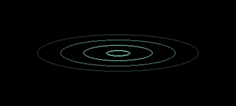
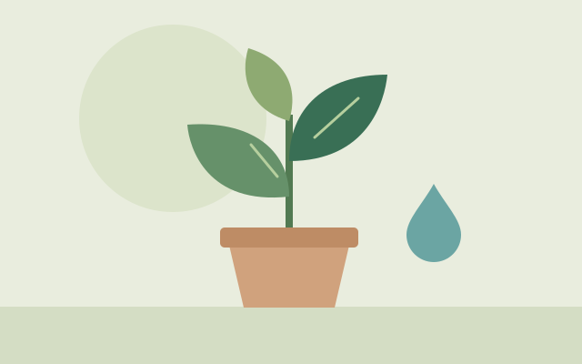

No dia a dia 2 min
O desperdício mora nos detalhes.
Uma gota parece pouco. Repetida o dia inteiro, ela conta outra história. Comece pelos pequenos sinais: torneiras pingando, descargas que não param e um hidrômetro que gira com tudo fechado.
O diário da água Aqua Alert
Um novo olhar sobre a água que faz parte da sua vida. Explore ideias, desfaça mitos e transforme informação em atitude.


Tudo está conectadoEm destaque 3 min de leitura
Ela atravessa rios, move cidades e chega até a sua torneira. Mas, entre abrir e fechar o registro, quanto dessa história passa despercebido?
Entender de onde a água vem é o primeiro passo para cuidar melhor de onde ela vai.
Explore essa históriaNo dia a dia 2 min
Uma gota parece pouco. Repetida o dia inteiro, ela conta outra história. Comece pelos pequenos sinais: torneiras pingando, descargas que não param e um hidrômetro que gira com tudo fechado.

Mito ou verdade 2 min
Nem toda água pode ganhar o mesmo destino. Reaproveitar com cuidado é tão importante quanto economizar: observe a origem, os resíduos e o uso que você pretende fazer.
Uma perspectiva maior
Cerca de 2,5% da água do planeta é doce. E boa parte está nas geleiras ou no subsolo: a água disponível para o nosso dia a dia é apenas uma fração desse total.
Cuidar da água também é cuidar da energia usada para captar, tratar, transportar e aquecer. Um banho mais curto, por exemplo, pode reduzir o uso de água e de eletricidade quando há aquecimento elétrico.
Leve essas ideias para a rotinaReferência: USGS · distribuição da água na Terra.